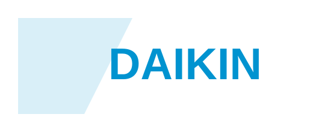

Vaillant
Marchio centrale per caldaie e pompe di calore, con focus forte sulla gamma aroTHERM plus e sulle soluzioni adatte a sostituzioni e nuovi impianti.
Apri sezione VaillantShowroom a Roma · Centocelle
Il nuovo sito è pensato per trasformare Termoidraulica Lauri in un punto di riferimento online chiaro, affidabile e orientato al contatto: showroom, consulenza, scelta materiali e supporto per privati e professionisti.
Marchi in evidenza
Da qui in avanti i marchi principali entrano con loghi visivi e cliccabili, così il sito perde l’effetto anonimo e acquista più forza commerciale.
Marchio centrale per caldaie e pompe di calore, con focus forte sulla gamma aroTHERM plus e sulle soluzioni adatte a sostituzioni e nuovi impianti.
Apri sezione Vaillant
ClimatizzazionePresenza fondamentale per climatizzazione, sistemi evoluti e soluzioni come Perfera, Stylish, Multi+ e canalizzati.
Apri sezione DaikinAttrezzature professionali e strumenti per chi lavora nel settore, con un impatto visivo più forte e più adatto al pubblico tecnico.
Apri sezione REMSImpiantistica, scarichi, adduzione e componenti tecnici in una fascia che parla direttamente a chi cerca solidità e competenza.
Apri sezione impiantisticaPercorsi principali
Ogni percorso ha una pagina dedicata, un messaggio specifico e una call to action mirata.
Scelta di sanitari, mobili, rubinetteria, piatti doccia, rivestimenti e supporto nella composizione dell’ambiente.
Vai alla pagina arredo bagnoMateriale tecnico, componenti, accessori e ricambi con un approccio pratico e orientato alla soluzione.
Vai alla pagina termoidraulicaUn punto di riferimento per artigiani, installatori e studi che hanno bisogno di rapidità, disponibilità e interlocutore serio.
Vai alla pagina professionistiPrime immagini del progetto
Per darti qualcosa di più definitivo ho inserito immagini generate direttamente nel progetto, così possiamo iniziare a correggere il sito su una base già più realistica.
 Showroom bagno
Showroom bagno
Una base visiva per rendere più credibile la sezione arredo bagno e cominciare a ragionare su immagine, atmosfera e disposizione dei contenuti.
 Termoidraulica e impiantistica
Termoidraulica e impiantistica
Questa immagine dà subito più corpo alla parte termoidraulica del sito e ci aiuta a uscire dall’effetto pagina troppo testuale.
Contatti
Questa sezione è pensata per evolversi con contatti reali, WhatsApp, richiesta preventivo e appuntamento showroom.